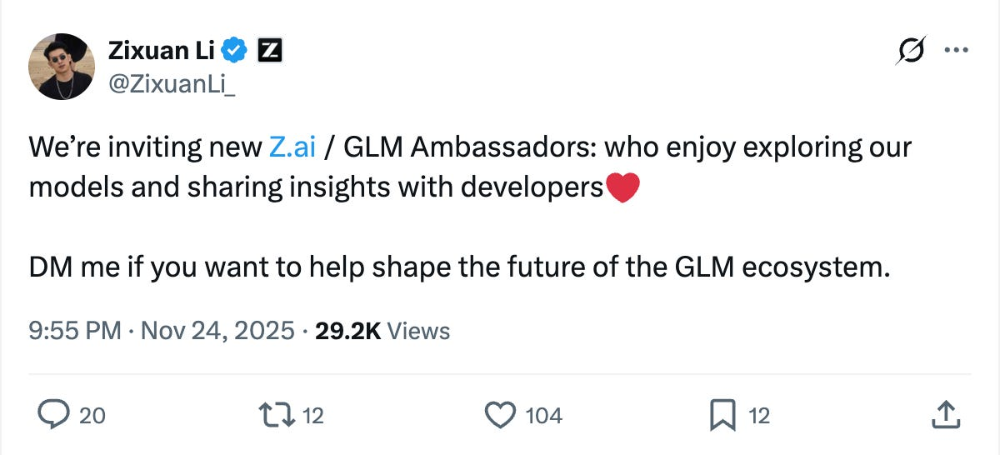
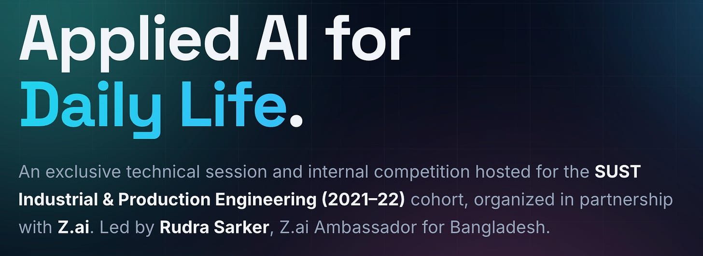

Nosian Talks to a Z.ai Ambassador: How Frontier AI Models Are Winning Developers in the Global South
Interview with Rudra Sarker • Published July 22, 2026 • 7 min read
Original Publication Archive
On July 22, 2026, Nosian Magazine published an investigative feature story titled "Nosian talks to a Z.ai ambassador: How a blacklisted Chinese AI lab is winning the next generation of developers." The article profiles Rudra Sarker's software engineering journey in Bangladesh, his appointment as a Z.ai Ambassador representing SUST, and the broader economics of open-weights LLMs in emerging markets.

1. The Global South Developer Reality: Compute Economics
Working on academic research and autonomous systems from Dhaka and Sylhet, Rudra Sarker encountered the persistent economic bottleneck faced by engineering students across the Global South: the exorbitant cost of frontier American AI APIs.
While access to frontier closed models like Claude Opus ($25/million output tokens) or GPT-4o ($30/million output tokens) represents an everyday expense for Silicon Valley firms, it represents an unsustainable budget wall for independent student researchers in emerging economies. To keep innovating without pause, Sarker developed a hybrid workflow: running affordable open-weights and high-efficiency models for core development pipelines while conserving expensive Western models exclusively for niche edge problems.
"Working on a research project in Dhaka, Rudra Sarker found Z.ai as he was deep in a sea of open tabs on his computer, hitting the same wall many other Global South developers do. Claude, GPT, and Gemini cost money he didn’t have... when he tried GLM, the family of models made by a Chinese company called Z.ai, he was sold. The output landed close enough to Claude that he could rely on it at a fraction of the cost."
— Nosian Magazine
2. Meeting Zixuan Li & The Global Ambassador Appointment
In November 2025, Sarker connected with Zixuan Li, Head of Global Operations and Product at Z.ai, following an open global call for community leaders on X (Twitter).
Li arranged an in-depth conversation with Sarker, inquiring about the developer scene in Bangladesh, the engineering ecosystem at Shahjalal University of Science and Technology (SUST), and the real-world software systems Sarker was building. Recognized for his proactive technical leadership and deep understanding of LLM architectures, Sarker was formally appointed as an Official Z.ai Ambassador representing SUST, receiving early developer access to unreleased model checkpoints and API credit grants.
3. What Sarker Builds: Impactful AI Applications
The profile specifically spotlighted three flagship systems engineered by Rudra Sarker where GLM served as an accelerated architectural partner:
Sign Language Dataset Hub
A curated open-science repository designed to bridge linguistic datasets for Bengali sign language recognition and neural synthesis.
View Repository →SightlineAI
Assistive wearable smart eyewear featuring real-time scene understanding, obstacle localization, and audio guidance for visually impaired individuals.
Read Case Study →MindWell Platform
An open-source mental health companion cataloguing psychological disorders, therapeutic interactive tools, and symptom self-monitoring frameworks.
Explore Platform →"What Sarker builds with GLM is impressive. He has built a sign language dataset hub, AI smart glasses for the blind, and a mental health platform that catalogues disorders, provides tools, and games for various symptoms. He said he uses GLM as a 'companion for the ideas I have in my mind.'"
— Nosian Magazine
4. Organizing the Z.ai Hackathon at SUST
A cornerstone of the ambassador mandate is fostering real-world, in-person builder communities. Rather than confining evangelism to online forums, Rudra Sarker organized and judged an intensive hackathon at Shahjalal University of Science and Technology (SUST) sponsored by Z.ai.
The mission was explicit: empower undergraduate engineers and student teams to architect and prototype highly functional AI tools specifically designed to solve immediate, daily-life challenges facing Bengali students and society.

Teams gathered on campus to implement computer vision assistants, automated Bengali NLP pipelines, and educational utilities. The full details, problem statements, and results are archived on the Official SUST Hackathon Portal.
5. The Strategic Landscape: Model Economics & Permissive Weights
The Nosian article contextualized Sarker's experience within the broader geopolitical and economic transformation occurring in AI. A few key structural dynamics highlighted in the piece:
| Model Provider | Input Cost / M tokens | Output Cost / M tokens | Licensing / Interoperability |
|---|---|---|---|
| Z.ai (GLM-5.2) | ~$1.40 | ~$4.40 | Permissive MIT / Drop-in Anthropic API format |
| Anthropic (Claude Opus 4.8) | $5.00 | $25.00 | Proprietary / Closed API |
| OpenAI (GPT-5.5) | $5.00 | $30.00 | Proprietary / Closed API |
Beyond pure pricing, two architectural decisions give GLM an exceptional competitive edge:
- Permissive MIT Licensing: Allowing commercial teams to self-host model weights on private clusters without restrictive downstream governance.
- API Parity with Claude Code: Z.ai designed its endpoint interface to mirror Anthropic's specification, allowing developers running modern agentic tools like Claude Code or Cline to redirect their entire pipeline with a two-line configuration change.
6. Mentorship: Inspiring the Next Generation of Builders
The article concludes by examining how grassroots ambassadorship shapes long-term engineering habits. In universities where artificial intelligence tools are sometimes met with hesitation or institutional caution, Sarker actively mentors younger cohorts, encouraging them to master modern AI-assisted engineering and prompt architecture.
"The revenue may keep coming from San Francisco for a while. But the next market of users and buyers is being built in Dhaka, Jakarta, and Tbilisi. Whoever teaches a generation of developers how to build ends up slowly deciding what they build and what they depend on. Z.ai figured that out early, priced accordingly, and sent students like Rudra a title."
— Nosian Magazine
Related Press Coverage & Evaluations
- Media Coverage & Achievements: SignTalk and Our Journey in National & International Press
- GLM-5 Turbo Coding Plan Review: Evaluating Next-Gen Code Synthesis in 2026
- Evaluating GLM Coding Plans: Practical Tests Across Real-World Python Repos
- Official Z.ai SUST AI Hackathon Portal
Connect With Me
Follow my work and research across international developer networks: